Praktikum 12 Ruumiandmete visualiseerimine 2
Esmalt lõpetame eelmisel korral tegemata jäänud ülesanded avaldiste kasutamise kohta. Kui sul ei ole salvestatud projekti, võta 11. praktikumi andmed ning tee praktikumi ülesanded järjekorras läbi.
12.1 Ülesanne 1: “ei ole”/“pole” levikuandmed
- Filtreeri ei ole/pole levikuandmete kihilt välja ainult need read, millel on keelend märgitud: paremklikk kihil -> Filter ->
"Keelend" IS NOT NULL.
- Lisa binaarne virtuaalne tunnus Variant, kus on erinevate keelendite asemel ainult üldistatud kategooriad ei_ole ja pole. Kasuta ükskõik millist tingimuslauset lihtsustatud tingimusega, et kategooria saab väärtuse pole, kui keelendi väärtuses esineb p-täht, ning väärtuse ei ole, kui p-tähte ei esine.
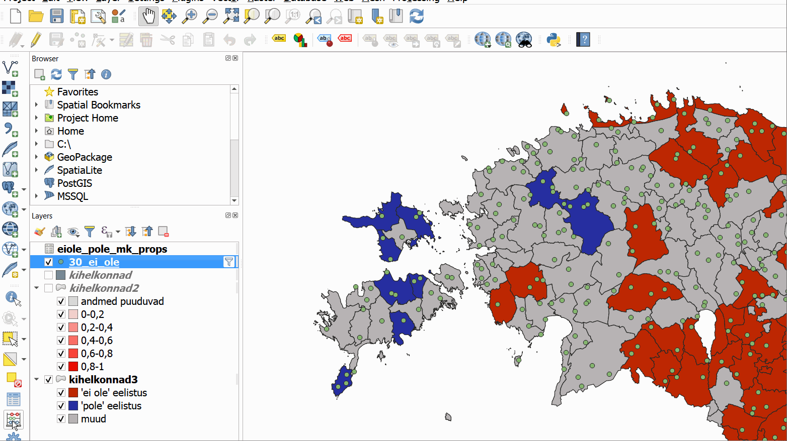Figure 12.1: Binaarse tunnuse lisamine
- Lisa binaarne tunnus sildina: paremklikk kihil -> Properties -> Labels -> Single labels -> Value (= Variant) -> OK
- Eemalda sildid ning väljenda binaarset tunnust eri sümbolite, värvi vm abil: paremklikk kihil -> Properties -> Symbology -> Categorized -> Value (= Variant) -> Classify jne.
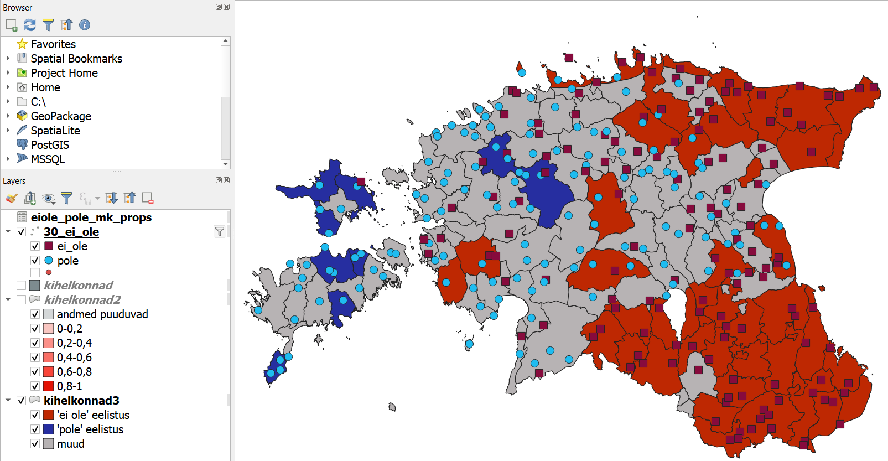Figure 12.2: ‘ei ole’ ja ‘pole’ leviku- ja sagedusandmed
12.2 Ülesanne 2: kaardi salvestamine
- Salvesta kaart, mis näitab korraga nii leviku- kui ka sagedusandmeid (kasuta kihti kihelkonnad2). Lisa kaardikiht, legend, allikad ja pealkiri.
- Mine Project -> New Print Layout ja sisesta oma kaardi nimi (nt levik ja sagedus).
- Kaardikihi lisamiseks vali menüüst Add Item -> Add Map ning joonista soovitud piirkonda kaardikihi ala. Kaardi liigutamiseks raami sees ning kaardikihil sisse- ja väljasuumimiseks vajuta klahvil C või vali 3 noolekesega tööriist Move item content, uuesti raami enda liigutamiseks vajuta klahvil V või vali ühe noolekesega tööriist Select/Move item.
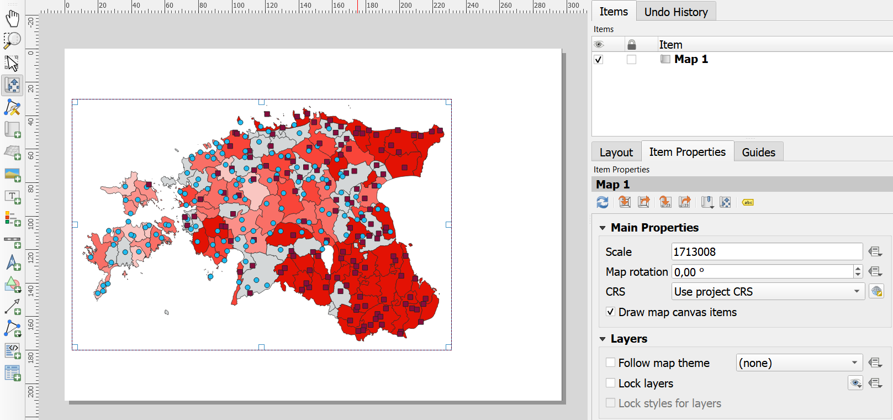Figure 12.3: Kaardiala lisamine
- Legendi lisamiseks vali menüüst Add Item -> Add Legend ning joonista soovitud piirkonda legendi ala. Legendi Item Properties all tee Legend Items sektsioonis linnuke kasti Only show items inside linked map, et kaotada legendilt ära kasutamata kihid. Samas sektsioonis tee topeltklikk kihtide nimel, et muuta nende pealkirju legendil. Pane näiteks 30_ei_ole kihi nimeks legendil Levikuandmed ning kihelkonnad2 kihi nimeks Sagedusandmed. Tee vajadusel teksti suurust veidi suuremaks sektsioonis Fonts and Text Formatting.
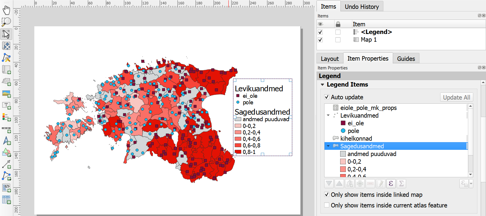Figure 12.4: Legendi lisamine
- Allikate lisamiseks vali menüüst Add Item -> Add Label ning joonista soovitud piirkonda tekstiala. Item Properties all kirjuta kasti Main Properties tekst Allikad: Maa-ameti geoportaal, eesti murrete korpus, Andrus Saareste “Väike Eesti murdeatlas” (1955). Muuda vajadusel fondi suurust Appearance saki alt ning joonda tekst paremale.
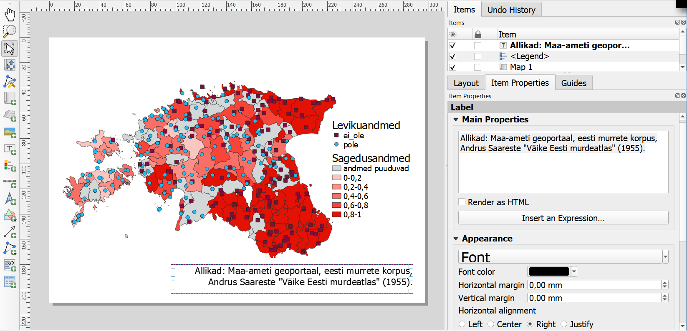
Figure 12.5: Allikate lisamine
- Lisa pealkiri samal moel nagu allikad.
- Kaardi salvestamiseks vali Layout -> Export as Image.
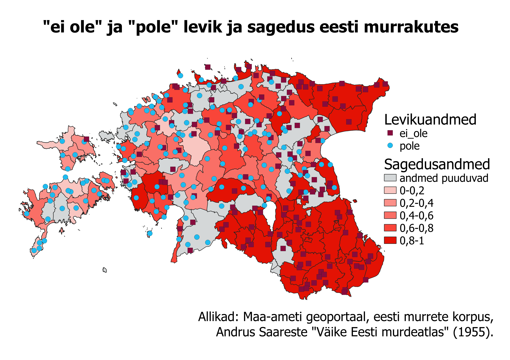Figure 12.6: Salvestatud kaart
- Mine Project -> New Print Layout ja sisesta oma kaardi nimi (nt levik ja sagedus).
12.3 Ülesanne 3: abielud ja lahutused
Teeme harjutamise mõttes läbi veel üle ülesande. Ühendame Statistikaameti abielude ja lahutuste registreerimise andmed (aastatest 2006-2020) Maa-ameti ruumiandmetega. Andmestikud abielude_registreerimised.csv ja lahutuste_registreerimised.csv on pärit vastavalt siit ja siit ning nn laiast tabelist, kus kuude andmed on eraldi tulpades, on tehtud pikk tabel, kus kuud on ühe omaette tunnusena ühes tulbas ning sündmuste arv samuti omaette tulbas. Pika tabeli tegemiseks on kasutatud järgmist R-i koodi.
library(tidyr) # Laadi vajalik pakett
# Loe andmed sisse (esimesed kaks rida jäta välja)
abielud <- read.delim("abielude_registreerimised_alg.csv", sep = ",", skip = 2, fileEncoding = "UTF-8")
lahutused <- read.delim("lahutuste_registreerimised_alg.csv", sep = ",", skip = 2, fileEncoding = "UTF-8")
# Tee laiadest tabelitest pikad
abielud <- gather(abielud, # tabelis 'abielu'
Kuu, # loo tulp 'Kuu', mis sisaldaks kuude tulbanimesid
Arv, # ja tulp 'Arv', mis sisaldaks sagedusi
Jaanuar:Detsember) # leia sagedused ja kuude nimed tulbast 'Jaanuar' kuni tulbani 'Detsember'
lahutused <- gather(lahutused, Kuu, Arv, Jaanuar:Detsember) # tee sama lahutustega
# Salvesta pikad tabelid
write.table(abielud, "abielude_registreerimised.csv", quote = F, sep = ";", row.names = F, fileEncoding = "UTF-8")
write.table(lahutused, "lahutuste_registreerimised.csv", quote = F, sep = ";", row.names = F, fileEncoding = "UTF-8")Kuna Statistikaameti andmetes on kohainfo esitatud üldiselt maakondade näol, ent Tallinna linn on eraldi üksus, siis peame kasutama Maa-ameti omavalitsuste andmeid.
- Impordi omavalitsuste vektorandmed (.SHP) ning abielude ja lahutuste tabelid (.CSV).
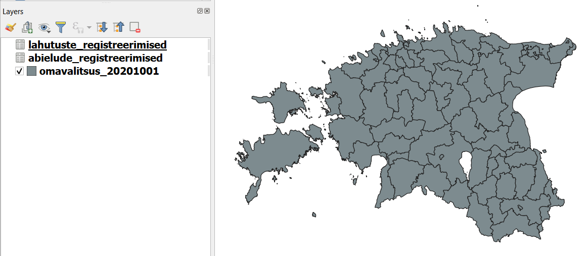
Figure 12.7: Imporditud kihid
- Ühenda lahutuste ja abielude andmed. Kuna peame ühendama andmeid mitme tulba info järgi (aasta, maakond, kuu), võime ühendamiseks teha mõlemasse andmestikku näiteks uue tulba AMK, kus see info on kokku kleebitud. Ühendame mõlemad andmestikud AMK tulba järgi ning ühendame lahutuste andmestikust ainult lahutuste arvu (kõik teised andmed on andmestikes samad).
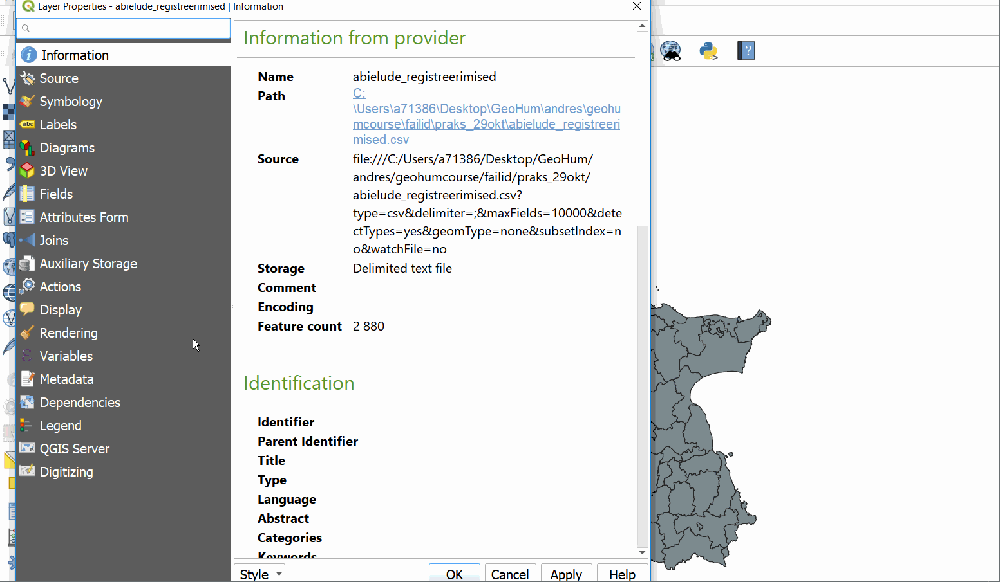Figure 12.8: Abielude ja lahutuste andmete ühendamine
- Muudame andmestiku abielude registreerimised nime kujule abielud_lahutused ning muudame ka tulpade Arv ja lahutuste_registreerimised_Arv nimed vastavalt abielude_arv ja lahutuste_arv (ajutised asendusnimed).
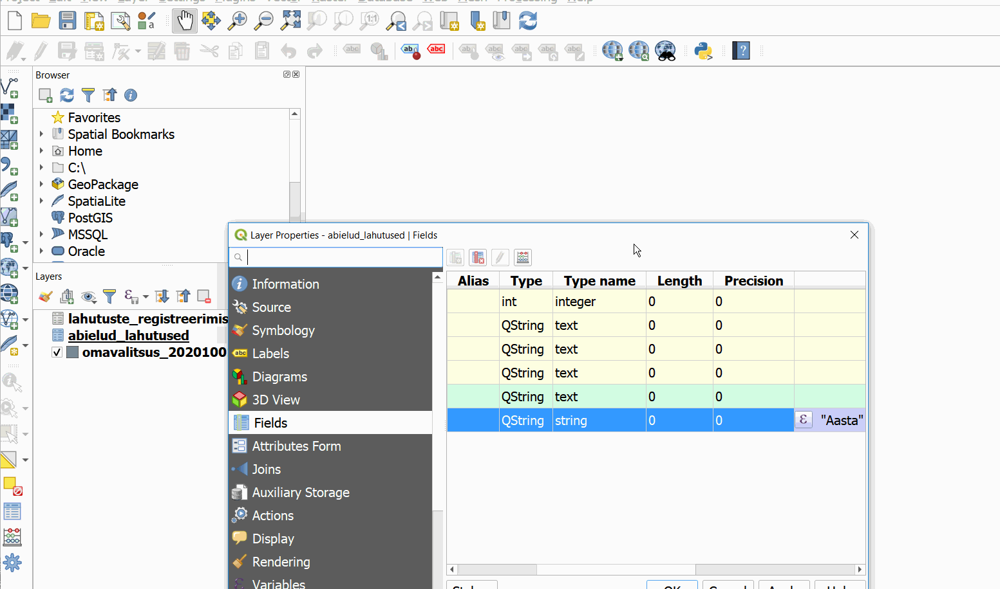Figure 12.9: Andmestiku ja tulbanimede muutmine
- Tee omavalitsuste kihist duplikaat nimega koopia.
- Ühenda duubeldatud omavalitsuste kihil (koopia) kõik omavalitsused, välja arvatud Tallinn, maakondadeks. Selleks vali Select tööriista abil kõik omavalitsused peale Tallinna ning vali menüüst Vector -> Geoprocessing Tools -> Dissolve. Tee linnuke valiku ette Selected features only ja vali Dissolve field(s) väärtuseks MNIMI. Uue kihi nimetuseks määra maakonnad.
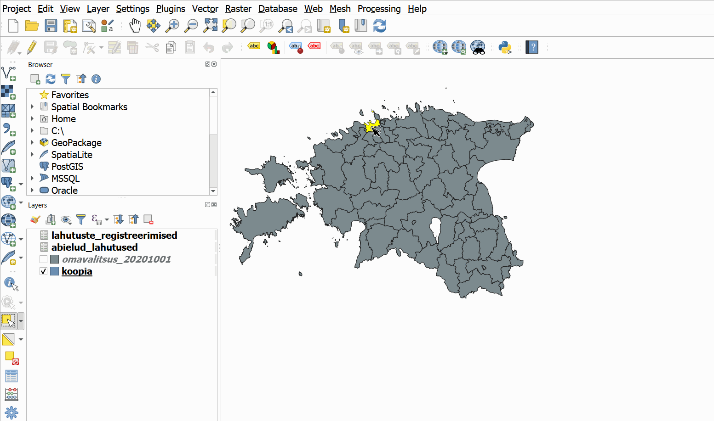Figure 12.10: Maakondade kihi loomine
- Vali kihilt koopia nüüd ainult Tallinna linn ning salvesta see eraldi kihina: paremklikk omavalitsuste kihil -> Export -> Save Features As.
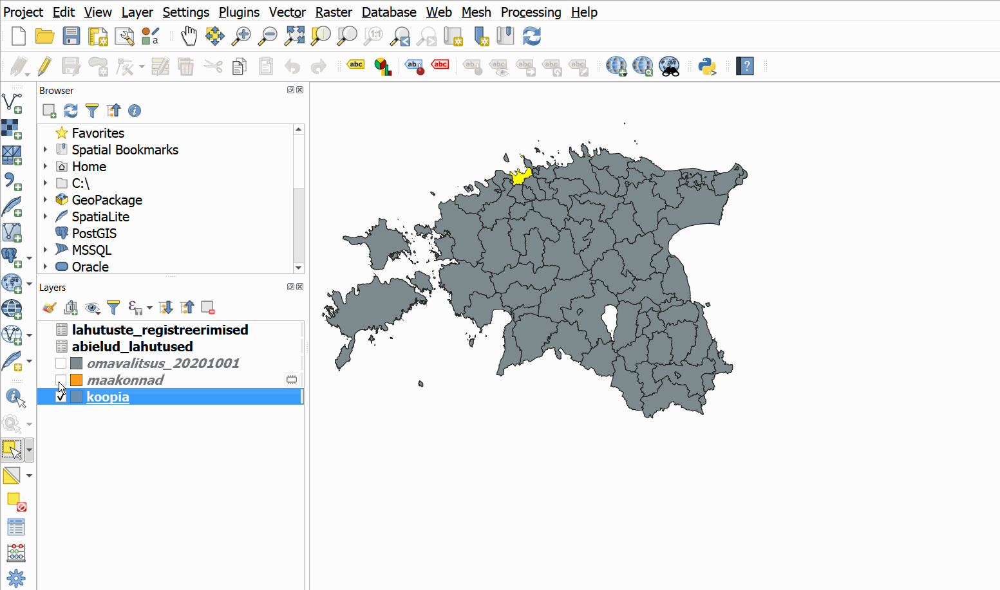Figure 12.11: Tallinna kihi salvestamine
- Nüüd ühenda maakondade ja Tallinna linna kihid: Vector -> Data Management Tools -> Merge Vector Layers.
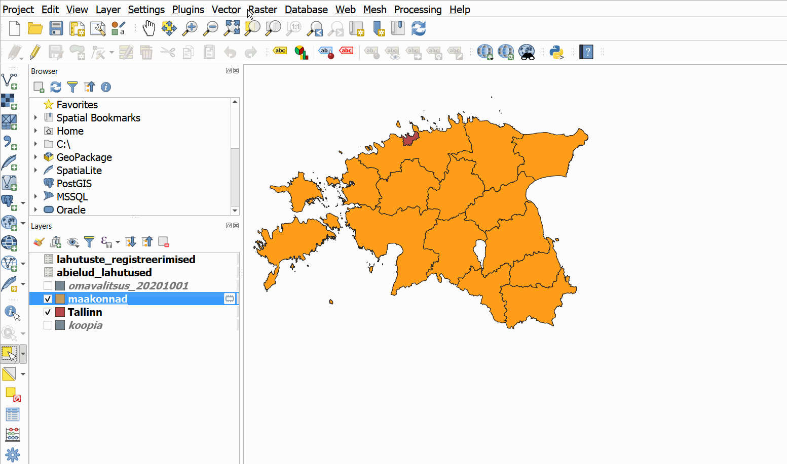Figure 12.12: Kihtide liitmine
- Tee uuest ühendatud kihist koopia nimega Yhendatud_mk.
- Filtreeri kihilt abielud_lahutused ainult 2019. aasta andmed: paremklikk kihil -> Filter… -> “Aasta” = 2019 -> OK. Kui QGIS küsib, kas oled nõus sellega, et ühendamiseks tehakse kihist virtuaalne kiht, siis vajuta OK. NB! Virtuaalsel kihil muudetakse tulbanimed abielude_arv ja lahutuste arv tagasi nende algsele kujule.
- Ühenda nüüd uus virtuaalne kiht ruumiandmetega abielude-lahutuste andmetega. Selleks kontrolli esmalt, kuidas on kohainfole (maakondadele) kahes andmestikus viidatud. Ühtlusta nimed kihi Yhendatud_mk uues tulbas MNIMI2.
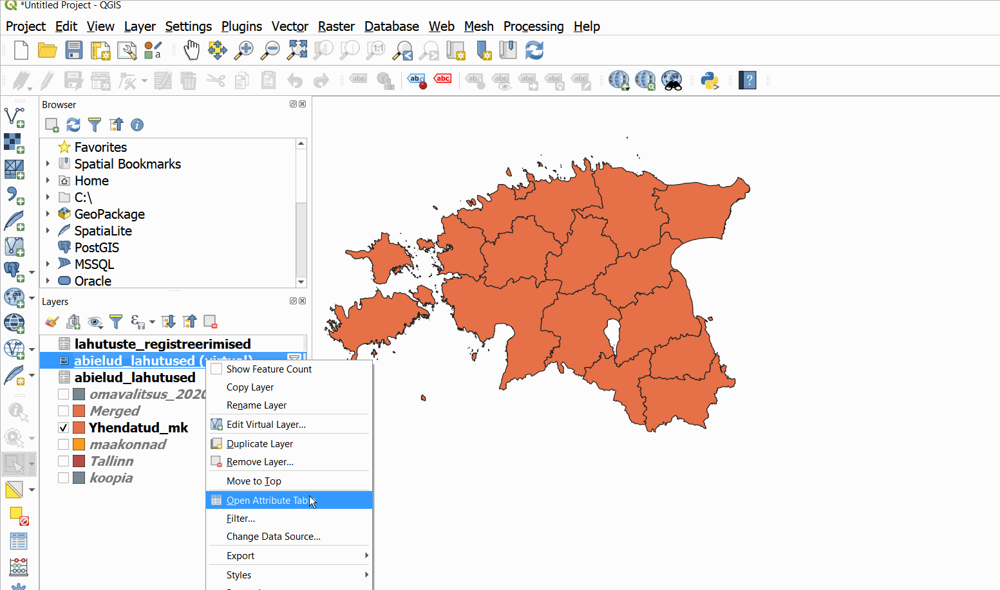Figure 12.13: Maakonnanimede muutmine
- Enne järgmist sammu salvesta kindlasti projekt!
- Kõigepealt nimeta ümber abielude-lahutuste virtuaalne kiht nimega abielud_lahutused_2019. Kuna tahame nüüd, et iga abielude-lahutuste rida (abielud ja lahutused teatud aastal teatud maakonnas) oleks seotud ruumiinfoga, ei saa me kasutada varasemalt õpitud andmete ühendamist, vaid peame kasutama SQL-i vahendeid. Selleks mine DB Manageri, tee aktiivseks ükskõik kumb ühendatavatest kihtidest ning kirjuta päringuaknasse
SELECT * FROM Yhendatud_mk JOIN abielud_lahutused_2019 ON Yhendatud_mk.MNIMI2 = abielud_lahutused_2019.Maakond;, tee linnuke valiku ette Load as new layer ning vajuta Execute (võib võtta natuke aega). Selle käsuga valime kõik tulbad ruumiandmete kihilt ning ühendame need abielude_lahutuste kihi andmetega, kusjuures ühendamise aluseks on esimesest andmestikust tulp MNIMI2 ja teisest andmestikust tulp Maakond.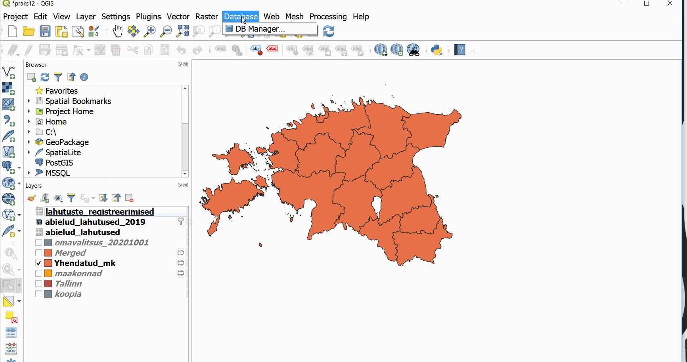Figure 12.14: Andmestike ühendamine SQLi abil
Kui ühendamine võtab liiga kaua aega või QGIS jookseb kokku, ava Moodle’isse üles laaditud lõppfail abielud_lahutused_mk_2019.gpkg, kus on ainult 2019. aasta andmed. NB! Tegemist on GeoPackage-formaadiga!
Järgmiseks peaksime saadud andmeid visualiseerima.
12.3.1 2019. aasta jaanuari abielude ja lahutuste suhe
- Värvi polügoonid selle järgi, milline on lahutuste osakaal kõikidest registreeritud perekonnatoimingutest 2019. aastal jaanuarikuus.
- Kontrolli esmalt abielude ja lahutuste arvu tulpade tüüpi ja vajadusel loo uued arvulised tulbad.
- Filtreeri andmed ja visualiseeri.

Figure 12.15: Lahutuste osakaal perekonnatoimingutest 2019. aasta jaanuaris
- Kontrolli esmalt abielude ja lahutuste arvu tulpade tüüpi ja vajadusel loo uued arvulised tulbad.
- Värvi polügoonid selle järgi, milline on lahutuste suhe abieludesse mingis maakonnas tervel 2019. aastal (st kui mitu korda on lahutusi vähem/rohkem kui abielusid). (P.S. See, et Tallinnas ja Harjumaal näib 2019. aastal olevat ühepalju abielusid-lahutusi, ei ole meie viga, vaid tuli Statistikaameti andmebaasiga kaasa).
- Võta kuu filter maha.
- Liida kuude andmed kokku, kasutades DB Manageri.
- Visualiseeri.

Figure 12.16: Lahutuste suhe abieludesse
- Võta kuu filter maha.
Kui tahame võrrelda erinevate aastate või kuude andmeid nagu esimesel juhul, peame andmeid ühendama nii, nagu seda siin praktikumis tegime. Kui aga tahame agregeerida ja üldistada ainult ühe aasta kohta üle kõikide kuude nagu teisel juhul, oleks tegelikult mõistlikum leida abielude-lahutuste suhted enne ruumiandmetega ühendamist, et vähendada andmemahtu ja kiirendada protsesse.
12.4 Andmebaasid
Ruumiinfoga varustatud failiformaatide (nt .shp või .gpkg) kõrval kasutatakse üha enam andmebaase, mis võimaldavad andmete hõlpsamat, kiiremat ja paindlikumat muutmist ja täiendamist ning samuti integreerimist teiste keskkondadega, mitme kasutaja koostööd jpm. Eriti oluliseks on andmebaasid saanud suurandmetega töötades, kuna vajalike päringute tegemine terve andmekihi importimise asemel hoiab kokku kõvasti arvutuslikku (ja ajalist) ressurssi. Kõige laialdasemalt kasutatakse ruumiandmete analüüsil PostGIS-i, mis on olemuselt ruumiandmeid analüüsida võimaldav laiendus PostgreSQLi andmebaasihaldussüsteemile, mis omakorda kasutab SQL-i päringukeelt (ning veel hulka laiendusi).
Figure 12.17: PostGIS vs shapefile
Loome nüüd ka ise andmebaasi. Teeme siin SpatiaLite’i andmebaasi, mida on lihtsam üles seada kui nt PostGISi andmebaase. SpatiaLite’i miinuseks on see, et see ei võimalda sama andmebaasiga töötada mitmel kasutajal korraga. Lokaalseks (nt oma arvutis enda uurimistööks) kasutamiseks on see aga mugavam lahendus kui PostGIS.
Andmebaasi tegemiseks tee brauseris paremklikk SpatiaLite’i ikoonil ning vali Create Database. Nimeta oma andmebaas nt nimega minudb.
- Esmalt impordi loodud koond2019 kihilt andmed. Selleks mine DB Manageri, vali oma loodud SpatiaLite’i andmebaas (vajuta noolekesel andmebaasi ees, nii et aknasse ilmuks andmebaasi üldine info) ja vajuta nupul Import Layer/File…. Vali kiht koond2019 ning vajuta OK.
- Teiseks sisesta ise uus tabel. Kasuta andmete sisestamiseks samuti Statistikaameti andmeid sündide arvu kohta aastatel 2017-2019, ent kujuta ette, et oled need kogunud ise ega saa neid lihtsalt tabelina alla laadida ega importida. NB! Vali hetkel tabelist ainult Tartumaa andmed aastast 2019 ning vorminda tabel samamoodi nagu abielude ja lahutuste andmed: selle asemel, et iga kuu andmed eraldi tulpa lisada (nn lai formaat), tee andmetabelisse kuu jaoks eraldi tulp Kuu ning iga kuu sündide arvu kajasta samuti eraldi tulbas nimega Arv (nn pikk formaat).
- Ava jälle SQL Window ning kasuta sündide tabeli lisamiseks käsku
CREATE TABLE tabelinimi (tulp1 ANDMETÜÜP, tulp2 ANDMETÜÜP, tulp3 ANDMETÜÜP, ...);, näiteksCREATE TABLE synnid (Aasta INT, Maakond VARCHAR, Kuu VARCHAR, Arv INT);Andmetüüpide kohta saad rohkem lugeda nt siit.
- Värskenda andmebaaside vaadet ülevalt vasakult Refresh nupu abil.
- Järgmiseks pead hakkama tabelisse sisestama ridu. Ridade lisamiseks saab kasutada käsku
INSERT INTO tabelinimi (tulp1, tulp2, tulp3, ...) VALUES ('väärtus1', 'väärtus2', 'väärtus3', ...).- Kui oled kindel, et lisatavate väärtuste arv on sama, mis tulpade arv, ning kõik väärtused lähevad õigetesse tulpadesse, võib tulpade nimetamise ka vahele jätta, nt
INSERT INTO synnid VALUES ('2019', 'Tartu maakond', 'Jaanuar', '154');. - Võid sisestada ka mitu rida korraga, nt
INSERT INTO synnid VALUES ('2019', 'Tartu maakond', 'Veebruar', '154'), ('2019', 'Tartu maakond', 'Märts', '178'), ('2019', 'Tartu maakond', 'Aprill', '185'); - Meil on siin kaks igal real korduvat elementi: aasta ja maakond. Selleks, et oma töövaeva vähendada, saab lisada esmalt
INSERTkäsuga ainult muutuva info ehk info kuu ja sündide arvu kohta ning hiljem tabelis käsugaUPDATEuuendada aasta ja maakonna infot nendel ridadel, kust see esialgu puudu jäi.
- Kui oled kindel, et lisatavate väärtuste arv on sama, mis tulpade arv, ning kõik väärtused lähevad õigetesse tulpadesse, võib tulpade nimetamise ka vahele jätta, nt
Figure 12.18: Andmetabeli täitmine SQLi abil
- Nüüd on olemas Tartu maakonna 2019. aasta sündide info. Agregeeri see, liites kõikide kuude andmed kokku (nagu tegime enne) ning lisa andmestikule koond2019. Millega pead kõigepealt tegelema?